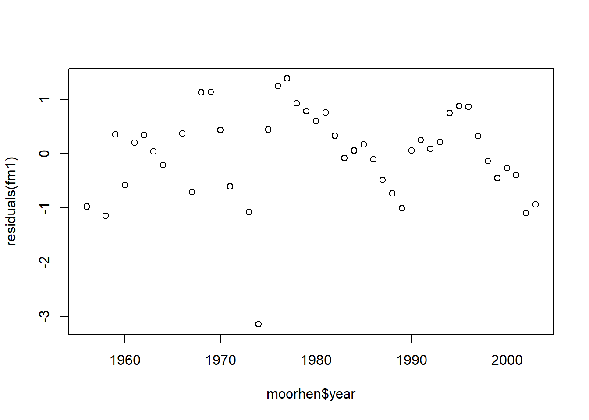
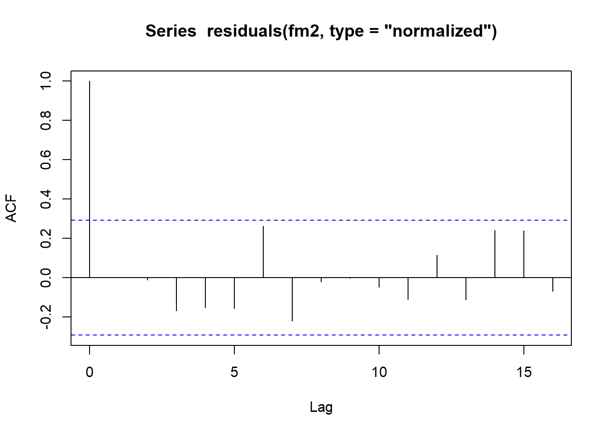
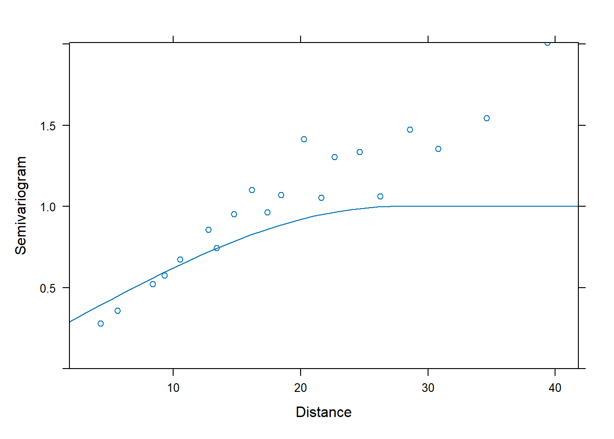

Chapter 5 Generalized Least Squares
5.1 Heterogeneous variance
We will illustrate generalized least squares (GLS) using a data set that gives the percentage of male births for four countries (Canada, Denmark, the Netherlands, and the US) for several decades in the late twentieth century. The data were originally reported in Davis et al., JAMA 279:1018–1023 (1998). The data set that we will work with was scraped from this publication by Ramsey and Schafer for their book “The Statistical Sleuth” (2e, 2002). The data can be found as the data set ‘ex0726’ in the r library ‘sleuth2’. We will begin by reading the data and performing some housekeeping.
#--------------------
# Ex 07.26 from the Statistical Sleuth, 2e
#--------------------
library(Sleuth2)
str(ex0726)## 'data.frame': 45 obs. of 5 variables:
## $ Year : num 1950 1951 1952 1953 1954 ...
## $ Denmark : num 0.512 0.517 0.515 0.517 0.515 ...
## $ Netherlands: num 0.516 0.516 0.516 0.516 0.516 ...
## $ Canada : num NaN NaN NaN NaN NaN NaN NaN NaN NaN NaN ...
## $ Usa : num NaN NaN NaN NaN NaN NaN NaN NaN NaN NaN ...## Loading required package: reshape2names(births) <- c("year", "DK", "NL", "CA", "US")
births.melt <- melt(births, id.vars = c("year"))
births <- births.melt
rm(births.melt)
names(births) <- c("year", "country", "pct.male")
births$pct.male <- 100 * births$pct.maleWe will focus only on the years 1970 – 1990, for which data are available for all countries:
## year country pct.male
## Min. :1970 DK:21 Min. :50.87
## 1st Qu.:1975 NL:21 1st Qu.:51.22
## Median :1980 CA:21 Median :51.28
## Mean :1980 US:21 Mean :51.30
## 3rd Qu.:1985 3rd Qu.:51.38
## Max. :1990 Max. :51.73## year country pct.male
## 21 1970 DK 51.40
## 22 1971 DK 51.70
## 23 1972 DK 51.26
## 24 1973 DK 51.33
## 25 1974 DK 51.27
## 26 1975 DK 51.08Let’s have a look at the time trends in percentage male births in each of the four countries:
par(mfrow = c(2, 2), las = 1)
with(births, plot(pct.male ~ year, type = "n", ylab = "percent male", main = "Canada"))
with(subset(births, country == "CA"), points(pct.male ~ year))
with(births, plot(pct.male ~ year, type = "n", ylab = "percent male", main = "USA"))
with(subset(births, country == "US"), points(pct.male ~ year))
with(births, plot(pct.male ~ year, type = "n", ylab = "percent male", main = "Denmark"))
with(subset(births, country == "DK"), points(pct.male ~ year))
with(births, plot(pct.male ~ year, type = "n", ylab = "percent male", main = "Netherlands"))
with(subset(births, country == "NL"), points(pct.male ~ year))For these data, we might want to ask: Is there evidence that the percentage of male births is changing through time? If so, does the rate of change differ among countries? Among continents?
These are the types of questions that we would usually address with a regression model. However, there’s a lot going on with these data that would cause us to question the appropriateness of the usual ordinary least squares (OLS) assumptions.
The responses are proportions. We know that when the response is a proportion, the variance in the response depends on the mean, with the variance decreasing as the mean approaches 0% or 100%, and obtaining its maximal value when the mean response is at 50%. For these data, however, all of the responses are sufficiently close to 50% that we don’t need to worry about heterogeneous variances that arise from the proportional nature of the response.
The variance of the response also depends inversely on the number of births. Evidently, this will be a major issue, because these countries differ substantially in the sizes of their populations. If we knew the number of births in each country in each year (in other words, if we knew the denominator of the each data point), then could account for these differences using grouped logistic regression. However, the data as we have them do not contain any information about the number of births that underlie each data point. So, we will need a different approach to deal with the heterogeneous variances among countries.
The data are time series. We will devote our attention to time-series data more fully later in the course. For now, it suffices to realize that time series data are typically autocorrelated. In other words, the residual errors for consecutive data points are often correlated (and usually positively correlated), and this correlation typically decays as the time between data points increases. For these data, it is less clear why the errors might be autocorrelated, but we want to allow for the possibility all the same.
We’ll regress the percentage of male births on year and country. Following Zuur et al.’s good advice, we’ll begin with a model with richly specified fixed effects. In this case, that means country specific intercepts and slopes. In an equation, this model is \[\begin{equation} y_{it} = a_i + b_i x_{it} + \varepsilon_{it} \end{equation}\] where \(i = 1, \ldots, 4\) is an index that distinguishes among the four countries, and \(t = 1, \ldots, 21\) is an index that distinguishes among the 21 years. The response \(y_{it}\) is the percentage of male births in country \(i\) in year \(t\), \(x_{it}\) is the year to which measurement \(y_{it}\) corresponds, the \(a_i\) are the country-specific intercepts, the \(b_i\) are the country-specific slopes, and the \(\varepsilon_{it}\)’s are the errors. To begin, we make the usual OLS assumption that the errors are iid, that is, \(\varepsilon_{it} \sim \mathcal{N}(0, \sigma^2)\).
##
## Call:
## lm(formula = pct.male ~ year * country)
##
## Residuals:
## Min 1Q Median 3Q Max
## -0.30707 -0.05931 0.00100 0.04787 0.35314
##
## Coefficients:
## Estimate Std. Error t value Pr(>|t|)
## (Intercept) 49.6995238 9.0048249 5.519 4.53e-07 ***
## year 0.0008442 0.0045479 0.186 0.8532
## countryNL 14.4252381 12.7347455 1.133 0.2609
## countryCA 23.6790476 12.7347455 1.859 0.0668 .
## countryUS 12.3090476 12.7347455 0.967 0.3368
## year:countryNL -0.0073636 0.0064317 -1.145 0.2558
## year:countryCA -0.0119610 0.0064317 -1.860 0.0668 .
## year:countryUS -0.0062727 0.0064317 -0.975 0.3325
## ---
## Signif. codes: 0 '***' 0.001 '**' 0.01 '*' 0.05 '.' 0.1 ' ' 1
##
## Residual standard error: 0.1262 on 76 degrees of freedom
## Multiple R-squared: 0.3052, Adjusted R-squared: 0.2412
## F-statistic: 4.768 on 7 and 76 DF, p-value: 0.0001753Inconveniently, the intercepts here refer to the percentage of male births extrapolated back to the year 1 BCE. That’s not very useful, so we’ll center the year predictor. Now, the predictor \(x_{it}\) will refer to the number of years before or after 1980, and the intercepts will give the fitted percentage of male births in the year 1980.
births$yr.ctr <- births$year - 1980
fm1 <- with(births, lm(pct.male ~ yr.ctr * country))
summary(fm1)##
## Call:
## lm(formula = pct.male ~ yr.ctr * country)
##
## Residuals:
## Min 1Q Median 3Q Max
## -0.30707 -0.05931 0.00100 0.04787 0.35314
##
## Coefficients:
## Estimate Std. Error t value Pr(>|t|)
## (Intercept) 51.3709524 0.0275387 1865.408 < 2e-16 ***
## yr.ctr 0.0008442 0.0045479 0.186 0.85324
## countryNL -0.1547619 0.0389456 -3.974 0.00016 ***
## countryCA -0.0038095 0.0389456 -0.098 0.92234
## countryUS -0.1109524 0.0389456 -2.849 0.00564 **
## yr.ctr:countryNL -0.0073636 0.0064317 -1.145 0.25584
## yr.ctr:countryCA -0.0119610 0.0064317 -1.860 0.06680 .
## yr.ctr:countryUS -0.0062727 0.0064317 -0.975 0.33251
## ---
## Signif. codes: 0 '***' 0.001 '**' 0.01 '*' 0.05 '.' 0.1 ' ' 1
##
## Residual standard error: 0.1262 on 76 degrees of freedom
## Multiple R-squared: 0.3052, Adjusted R-squared: 0.2412
## F-statistic: 4.768 on 7 and 76 DF, p-value: 0.0001753Let’s plot the percentage of male births vs. year for each country, and overlay the fit of regression lines. To make it easy to extract the country-specific slopes and intercepts, we’ll first re-fit the model without the global intercept:
##
## Call:
## lm(formula = pct.male ~ country + yr.ctr:country - 1)
##
## Residuals:
## Min 1Q Median 3Q Max
## -0.30707 -0.05931 0.00100 0.04787 0.35314
##
## Coefficients:
## Estimate Std. Error t value Pr(>|t|)
## countryDK 51.3709524 0.0275387 1865.408 <2e-16 ***
## countryNL 51.2161905 0.0275387 1859.788 <2e-16 ***
## countryCA 51.3671429 0.0275387 1865.270 <2e-16 ***
## countryUS 51.2600000 0.0275387 1861.379 <2e-16 ***
## countryDK:yr.ctr 0.0008442 0.0045479 0.186 0.8532
## countryNL:yr.ctr -0.0065195 0.0045479 -1.434 0.1558
## countryCA:yr.ctr -0.0111169 0.0045479 -2.444 0.0168 *
## countryUS:yr.ctr -0.0054286 0.0045479 -1.194 0.2363
## ---
## Signif. codes: 0 '***' 0.001 '**' 0.01 '*' 0.05 '.' 0.1 ' ' 1
##
## Residual standard error: 0.1262 on 76 degrees of freedom
## Multiple R-squared: 1, Adjusted R-squared: 1
## F-statistic: 1.735e+06 on 8 and 76 DF, p-value: < 2.2e-16There’s probably a more elegant way to extract the slope and intercept, but we’ll use the crude approach for now.
par(mfrow = c(2, 2), las = 1)
with(births, plot(pct.male ~ year, type = "n", ylab = "percent male", main = "Canada"))
with(subset(births, country == "CA"), points(pct.male ~ year))
abline(a = 51.3671 - (-0.01112 * 1980), b = -0.01112)
with(births, plot(pct.male ~ year, type = "n", ylab = "percent male", main = "USA"))
with(subset(births, country == "US"), points(pct.male ~ year))
abline(a = 51.26 - (-0.0054286 * 1980), b = -0.0054286)
with(births, plot(pct.male ~ year, type = "n", ylab = "percent male", main = "Denmark"))
with(subset(births, country == "DK"), points(pct.male ~ year))
abline(a = 51.3709 - (0.0008442 * 1980), b = 0.0008442)
with(births, plot(pct.male ~ year, type = "n", ylab = "percent male", main = "Netherlands"))
with(subset(births, country == "NL"), points(pct.male ~ year))
abline(a = 51.2162 - (-0.00652 * 1980), b = -0.0065195)
We would like to draw inferences about the time and country effects. However, the error variance clearly differs among the countries, because of the different sizes of the countries’ populations. Thus, we can’t trust the usual inference procedures that assume iid errors.
We will cope by fitting a GLS model that allows the error variances to differ among the countries. The model equation is nearly the same as above: \[\begin{equation} y_{it} = a_i + b_i x_{it} + \varepsilon_{it}. \end{equation}\] The only difference is that now we assume that the variance of the errors differs among the countries: \(\varepsilon_{it} \sim \mathcal{N}(0, \sigma^2_i)\). This change looks trivial in the notation, but it’s an important change to the model!
## Loading required package: nlmegls1 <- gls(pct.male ~ yr.ctr * country, data = births, weights = varIdent(form = ~ 1 | country))
summary(gls1)## Generalized least squares fit by REML
## Model: pct.male ~ yr.ctr * country
## Data: births
## AIC BIC logLik
## -94.69995 -66.73115 59.34998
##
## Variance function:
## Structure: Different standard deviations per stratum
## Formula: ~1 | country
## Parameter estimates:
## DK NL CA US
## 1.0000000 0.7264997 0.3971728 0.1347962
##
## Coefficients:
## Value Std.Error t-value p-value
## (Intercept) 51.37095 0.04219635 1217.4264 0.0000
## yr.ctr 0.00084 0.00696850 0.1211 0.9039
## countryNL -0.15476 0.05215650 -2.9673 0.0040
## countryCA -0.00381 0.04540269 -0.0839 0.9334
## countryUS -0.11095 0.04257798 -2.6059 0.0110
## yr.ctr:countryNL -0.00736 0.00861336 -0.8549 0.3953
## yr.ctr:countryCA -0.01196 0.00749801 -1.5952 0.1148
## yr.ctr:countryUS -0.00627 0.00703152 -0.8921 0.3752
##
## Correlation:
## (Intr) yr.ctr cntrNL cntrCA cntrUS yr.:NL yr.:CA
## yr.ctr 0.000
## countryNL -0.809 0.000
## countryCA -0.929 0.000 0.752
## countryUS -0.991 0.000 0.802 0.921
## yr.ctr:countryNL 0.000 -0.809 0.000 0.000 0.000
## yr.ctr:countryCA 0.000 -0.929 0.000 0.000 0.000 0.752
## yr.ctr:countryUS 0.000 -0.991 0.000 0.000 0.000 0.802 0.921
##
## Standardized residuals:
## Min Q1 Med Q3 Max
## -2.18586069 -0.69331440 -0.01165266 0.66706364 1.82625135
##
## Residual standard error: 0.193368
## Degrees of freedom: 84 total; 76 residualNotice that the model estimates separate error standard deviations for each country.
We would like to ask if model with country-specific variances provides a statistically significant improvement in fit relative to the model with homogeneous error variances. Here, it is crucial to remember that the default fitting scheme in nlme::gls is REML. However, because the models share the same fixed-effect structure, we can compare AIC values from the REML fits directly. Further, because the modes are nested, we can use the REML fits for a likelihood ratio test. The anova.gls command provides both.
## Model df AIC BIC logLik Test L.Ratio p-value
## gls0 1 9 -42.18264 -21.20604 30.09132
## gls1 2 12 -94.69995 -66.73115 59.34998 1 vs 2 58.51731 <.0001Both the LRT and the AIC suggest that the GLS model with country-specific variances provides a statistically significant improvement over the OLS model with homogeneous error variances.
If the fixed-effect structures had not been the same, it would not have been correct to compare the models using the REML fits. Instead, we would have to re-fit the models using ML. For the sake of illustration, let’s do this anyway, and see if and how the results differ.
gls0ML <- gls(pct.male ~ yr.ctr * country, data = births, method = "ML")
gls1ML <- gls(pct.male ~ yr.ctr * country, data = births,
weights = varIdent(form = ~ 1 | country), method = "ML")
anova(gls0ML, gls1ML)## Model df AIC BIC logLik Test L.Ratio p-value
## gls0ML 1 9 -99.76871 -77.89136 58.88435
## gls1ML 2 12 -158.44573 -129.27593 91.22287 1 vs 2 64.67702 <.0001We obtain somewhat different numerical results based on the ML fit, even though the qualitative outcome of the test is unchanged (the model with country-specific variances is still strongly favored).
In any event, we can also compare the variance estimates from the ML fit to those from the REML fit.
## Generalized least squares fit by maximum likelihood
## Model: pct.male ~ yr.ctr * country
## Data: births
## AIC BIC logLik
## -158.4457 -129.2759 91.22287
##
## Variance function:
## Structure: Different standard deviations per stratum
## Formula: ~1 | country
## Parameter estimates:
## DK NL CA US
## 1.0000000 0.7264997 0.3971729 0.1347962
##
## Coefficients:
## Value Std.Error t-value p-value
## (Intercept) 51.37095 0.04219635 1217.4265 0.0000
## yr.ctr 0.00084 0.00696850 0.1211 0.9039
## countryNL -0.15476 0.05215650 -2.9673 0.0040
## countryCA -0.00381 0.04540269 -0.0839 0.9334
## countryUS -0.11095 0.04257798 -2.6059 0.0110
## yr.ctr:countryNL -0.00736 0.00861336 -0.8549 0.3953
## yr.ctr:countryCA -0.01196 0.00749801 -1.5952 0.1148
## yr.ctr:countryUS -0.00627 0.00703152 -0.8921 0.3752
##
## Correlation:
## (Intr) yr.ctr cntrNL cntrCA cntrUS yr.:NL yr.:CA
## yr.ctr 0.000
## countryNL -0.809 0.000
## countryCA -0.929 0.000 0.752
## countryUS -0.991 0.000 0.802 0.921
## yr.ctr:countryNL 0.000 -0.809 0.000 0.000 0.000
## yr.ctr:countryCA 0.000 -0.929 0.000 0.000 0.000 0.752
## yr.ctr:countryUS 0.000 -0.991 0.000 0.000 0.000 0.802 0.921
##
## Standardized residuals:
## Min Q1 Med Q3 Max
## -2.29802807 -0.72889177 -0.01225061 0.70129397 1.91996548
##
## Residual standard error: 0.1839296
## Degrees of freedom: 84 total; 76 residualNote that the estimate of the residual standard deviation (mislabeled as the “residual standard error” in the R output) is smaller for the ML fit than for the REML fit, as we expect.
To continue, we can also fit a first-order autoregressive correlation structure to the residual errors within each country. Here, because the data are evenly spaced and are already sorted in the data set, it’s simple to add the within country autocorrelation. To write this model as an equation, the fixed-effect specification remains unchanged: \[\begin{equation} y_{it} = a_i + b_i x_{it} + \varepsilon_{it}. \end{equation}\] The marginal distribution of the errors is also unchanged: \(\varepsilon_{it} \sim \mathcal{N}(0, \sigma^2_i)\). However, the within-country errors are now correlated: \[\begin{equation} \mathrm{Corr}(\varepsilon_{it_1}, \varepsilon_{jt_2}) = \begin{cases} \rho^{|t_1 - t_2|} & i = j \\ 0 & i \neq j \end{cases} \end{equation}\]
gls2 <- gls(pct.male ~ yr.ctr * country, data = births, weights = varIdent(form = ~ 1 | country),
correlation = corAR1(form = ~ 1 | country))
summary(gls2)## Generalized least squares fit by REML
## Model: pct.male ~ yr.ctr * country
## Data: births
## AIC BIC logLik
## -93.01222 -62.71269 59.50611
##
## Correlation Structure: AR(1)
## Formula: ~1 | country
## Parameter estimate(s):
## Phi
## 0.07081995
## Variance function:
## Structure: Different standard deviations per stratum
## Formula: ~1 | country
## Parameter estimates:
## DK NL CA US
## 1.0000000 0.7416576 0.4009707 0.1338036
##
## Coefficients:
## Value Std.Error t-value p-value
## (Intercept) 51.37134 0.04520738 1136.3486 0.0000
## yr.ctr 0.00088 0.00741198 0.1187 0.9058
## countryNL -0.15484 0.05628375 -2.7510 0.0074
## countryCA -0.00385 0.04870615 -0.0791 0.9371
## countryUS -0.11127 0.04561027 -2.4396 0.0170
## yr.ctr:countryNL -0.00713 0.00922801 -0.7727 0.4421
## yr.ctr:countryCA -0.01188 0.00798562 -1.4872 0.1411
## yr.ctr:countryUS -0.00634 0.00747803 -0.8481 0.3991
##
## Correlation:
## (Intr) yr.ctr cntrNL cntrCA cntrUS yr.:NL yr.:CA
## yr.ctr 0.000
## countryNL -0.803 0.000
## countryCA -0.928 0.000 0.746
## countryUS -0.991 0.000 0.796 0.920
## yr.ctr:countryNL 0.000 -0.803 0.000 0.000 0.000
## yr.ctr:countryCA 0.000 -0.928 0.000 0.000 0.000 0.746
## yr.ctr:countryUS 0.000 -0.991 0.000 0.000 0.000 0.796 0.920
##
## Standardized residuals:
## Min Q1 Med Q3 Max
## -2.15117280 -0.70400503 -0.02488281 0.66159776 1.82002897
##
## Residual standard error: 0.1936784
## Degrees of freedom: 84 total; 76 residualThe estimate of the within-country correlation is small: only 0.071. The model with autocorrelated errors is nested within the model with heterogeneous variances, and both have the same fixed-effect structure, so we can compare the two REML fits directly:
## Model df AIC BIC logLik Test L.Ratio p-value
## gls0 1 9 -42.18264 -21.20604 30.09132
## gls1 2 12 -94.69995 -66.73115 59.34998 1 vs 2 58.51731 <.0001
## gls2 3 13 -93.01222 -62.71269 59.50611 2 vs 3 0.31227 0.5763By either AIC or the LRT, the model with the autocorrelated errors does not provide a statistically significant improvement in fit.
We can now use the model with heterogeneous variances and independent errors to conduct the usual inferences on the fixed effects. Because we now compare models with different fixed-effect structures, we must work on the ML fits. Let’s start with a model that removes the interaction between time and country. The model is: \[\begin{equation} y_{it} = a_i + b x_{it} + \varepsilon_{it}. \end{equation}\] In other words, there is a common slope among the countries.
gls3ML <- gls(pct.male ~ yr.ctr + country, data = births, weights = varIdent(form = ~ 1 | country),
method = "ML")
summary(gls3ML)## Generalized least squares fit by maximum likelihood
## Model: pct.male ~ yr.ctr + country
## Data: births
## AIC BIC logLik
## -159.5456 -137.6682 88.7728
##
## Variance function:
## Structure: Different standard deviations per stratum
## Formula: ~1 | country
## Parameter estimates:
## DK NL CA US
## 1.0000000 0.7098035 0.4232237 0.1323319
##
## Coefficients:
## Value Std.Error t-value p-value
## (Intercept) 51.37095 0.04238044 1212.1383 0.0000
## yr.ctr -0.00585 0.00086365 -6.7731 0.0000
## countryNL -0.15476 0.05197129 -2.9778 0.0039
## countryCA -0.00381 0.04601974 -0.0828 0.9342
## countryUS -0.11095 0.04274991 -2.5954 0.0113
##
## Correlation:
## (Intr) yr.ctr cntrNL cntrCA
## yr.ctr 0.000
## countryNL -0.815 0.000
## countryCA -0.921 0.000 0.751
## countryUS -0.991 0.000 0.808 0.913
##
## Standardized residuals:
## Min Q1 Med Q3 Max
## -2.32703514 -0.72533260 0.03426803 0.82167128 2.12375963
##
## Residual standard error: 0.1883428
## Degrees of freedom: 84 total; 79 residual## Model df AIC BIC logLik Test L.Ratio p-value
## gls3ML 1 9 -159.5456 -137.6683 88.77280
## gls1ML 2 12 -158.4457 -129.2759 91.22287 1 vs 2 4.900132 0.1793Both AIC and the LRT favor a model with a common slope. Let’s go further to see if the intercepts differ among the countries. In other words, we can entertain the model \[\begin{equation} y_{it} = a + b x_{it} + \varepsilon_{it}. \end{equation}\]
gls4ML <- gls(pct.male ~ yr.ctr, data = births, weights = varIdent(form = ~ 1 | country),
method = "ML")
summary(gls4ML)## Generalized least squares fit by maximum likelihood
## Model: pct.male ~ yr.ctr
## Data: births
## AIC BIC logLik
## -136.0564 -121.4715 74.0282
##
## Variance function:
## Structure: Different standard deviations per stratum
## Formula: ~1 | country
## Parameter estimates:
## DK NL CA US
## 1.0000000 0.6559362 0.6051856 0.1159405
##
## Coefficients:
## Value Std.Error t-value p-value
## (Intercept) 51.26375 0.005328997 9619.775 0
## yr.ctr -0.00558 0.000880055 -6.335 0
##
## Correlation:
## (Intr)
## yr.ctr 0
##
## Standardized residuals:
## Min Q1 Med Q3 Max
## -2.5381852 -0.3580929 0.1883530 0.9250208 2.3348069
##
## Residual standard error: 0.2164103
## Degrees of freedom: 84 total; 82 residual## Model df AIC BIC logLik Test L.Ratio p-value
## gls4ML 1 6 -136.0564 -121.4715 74.02820
## gls3ML 2 9 -159.5456 -137.6683 88.77280 1 vs 2 29.489202 <.0001
## gls1ML 3 12 -158.4457 -129.2759 91.22287 2 vs 3 4.900132 0.1793There is strong evidence that the percentage of male births differs among countries, after accounting for the effect of the temporal trend.
We can visualize the model by making scatterplots and overlaying fitted regression lines. Having finished with model selection, we’ll revert to the REML fits for final parameter estimation. Again, we’ll use the trick of eliminating the global intercept to make it easier to find the country-specific intercepts.
gls3a <- gls(pct.male ~ yr.ctr + country - 1, data = births, weights = varIdent(form = ~ 1 | country))
summary(gls3a)## Generalized least squares fit by REML
## Model: pct.male ~ yr.ctr + country - 1
## Data: births
## AIC BIC logLik
## -122.7459 -101.4209 70.37297
##
## Variance function:
## Structure: Different standard deviations per stratum
## Formula: ~1 | country
## Parameter estimates:
## DK NL CA US
## 1.0000000 0.7099907 0.4237511 0.1352729
##
## Coefficients:
## Value Std.Error t-value p-value
## yr.ctr -0.00586 0.00087529 -6.700 0
## countryDK 51.37095 0.04213583 1219.175 0
## countryNL 51.21619 0.02991605 1711.997 0
## countryCA 51.36714 0.01785511 2876.888 0
## countryUS 51.26000 0.00569984 8993.240 0
##
## Correlation:
## yr.ctr cntrDK cntrNL cntrCA
## countryDK 0
## countryNL 0 0
## countryCA 0 0 0
## countryUS 0 0 0 0
##
## Standardized residuals:
## Min Q1 Med Q3 Max
## -2.26855300 -0.70087717 0.03371643 0.79968076 2.07208985
##
## Residual standard error: 0.1930906
## Degrees of freedom: 84 total; 79 residual par(mfrow = c(2, 2), las = 1)
with(births, plot(pct.male ~ year, type = "n", ylab = "percent male", main = "Canada"))
with(subset(births, country == "CA"), points(pct.male ~ year))
abline(a = 51.3671 + 0.00586 * 1980, b = -0.00586)
with(births, plot(pct.male ~ year, type = "n", ylab = "percent male", main = "USA"))
with(subset(births, country == "US"), points(pct.male ~ year))
abline(a = 51.26 + 0.00586 * 1980, b = -0.00586)
with(births, plot(pct.male ~ year, type = "n", ylab = "percent male", main = "Denmark"))
with(subset(births, country == "DK"), points(pct.male ~ year))
abline(a = 51.371 + 0.00586 * 1980, b = -0.00586)
with(births, plot(pct.male ~ year, type = "n", ylab = "percent male", main = "Netherlands"))
with(subset(births, country == "NL"), points(pct.male ~ year))
abline(a = 51.2162 + 0.00586 * 1980, b = -0.00586)
It is interesting to compare the estimate of the slope between the GLS model and the naive OLS fit. In the GLS model, the slope is estimated to be \(-0.00586\%\) per year, with a standard error of \(8.8 \times 10^{-4}\). In the OLS fit, the estimate is \(-0.00555\%\) per year, with a standard error of \(2.8 \times 10^{-3}\). Thus the GLS fit has substantially improved the precision of the estimate of the temporal trend.
## Generalized least squares fit by REML
## Model: pct.male ~ yr.ctr + country
## Data: births
## AIC BIC logLik
## -70.12178 -55.9051 41.06089
##
## Coefficients:
## Value Std.Error t-value p-value
## (Intercept) 51.37095 0.02762942 1859.2846 0.0000
## yr.ctr -0.00556 0.00228142 -2.4350 0.0171
## countryNL -0.15476 0.03907390 -3.9607 0.0002
## countryCA -0.00381 0.03907390 -0.0975 0.9226
## countryUS -0.11095 0.03907390 -2.8396 0.0057
##
## Correlation:
## (Intr) yr.ctr cntrNL cntrCA
## yr.ctr 0.000
## countryNL -0.707 0.000
## countryCA -0.707 0.000 0.500
## countryUS -0.707 0.000 0.500 0.500
##
## Standardized residuals:
## Min Q1 Med Q3 Max
## -2.517325067 -0.553487986 0.009393865 0.508672668 3.142893232
##
## Residual standard error: 0.1266139
## Degrees of freedom: 84 total; 79 residual5.2 Temporal (serial) correlation
Temporal structure often induces a (positive) correlation between data points that occur close together in time. These are the same types of correlations that we would expect to find for any data that occur as part of a series, or serial correlation. (Other data types may display serial correlations that are not driven by time, such as positions along a one-dimensional spatial transect.) We will illustrate how to handle temporal correlations using a time series of annual moorhen abundance on the island of Kauai. These data are analyzed in Ch. 6 of Zuur et al. (2009), and are originally from Reed et al. (2007). The data are available for download from the website associated with Zuur et al.’s text. More details about the models available to handle serial correlations in nlme::gls can be found in \(\S\) 5.3.1 of Pinheiro & Bates (2000).
First we load the data and do some housekeeping.
rm(list = ls())
require(nlme)
birds <- read.table("data/Hawaii.txt", head = T)
## extract moorhen data
moorhen <- birds[, c("Year", "Rainfall", "Moorhen.Kauai")]
## rename variables
names(moorhen) <- c("year", "rainfall", "abundance")
## remove NAs
moorhen <- na.omit(moorhen)
with(moorhen, plot(abundance ~ year))

Suppose we want to characterize any possible (linear) temporal trend in moorhen abundance, and/or any association between moorhen abundance and annual rainfall. We log transform the abundance data to convert any multiplicative time trends into linear trends. First we will fit an OLS model and use the function acf to plot the autocorrelation function (ACF) of the residuals.
fm1 <- nlme::gls(log(abundance) ~ rainfall + year, data = moorhen)
plot(residuals(fm1) ~ moorhen$year)
The significant first-order autocorrelation suggests a first-order autoregressive model might be appropriate for these errors. We will fit such a model using the corAR1 correlation structure. In doing so, we use the formula form = ~ year to indicate that the year variable in the data set provides the time index. This is a necessary step with these data because some years are missing.
fm2 <- nlme::gls(log(abundance) ~ rainfall + year, data = moorhen,
correlation = corAR1(form = ~ year))
summary(fm2)## Generalized least squares fit by REML
## Model: log(abundance) ~ rainfall + year
## Data: moorhen
## AIC BIC logLik
## 124.6062 133.2946 -57.3031
##
## Correlation Structure: ARMA(1,0)
## Formula: ~year
## Parameter estimate(s):
## Phi1
## 0.5599778
##
## Coefficients:
## Value Std.Error t-value p-value
## (Intercept) -161.17809 32.93180 -4.894299 0.0000
## rainfall -0.00783 0.01433 -0.546369 0.5877
## year 0.08326 0.01663 5.005461 0.0000
##
## Correlation:
## (Intr) ranfll
## rainfall -0.006
## year -1.000 -0.001
##
## Standardized residuals:
## Min Q1 Med Q3 Max
## -3.3338721 -0.5125953 0.2117251 0.6813604 1.5181543
##
## Residual standard error: 0.9112434
## Degrees of freedom: 45 total; 42 residualThe fit suggests that the residuals from adjacent years have a reasonably strong positive correlation of \(\approx 0.56\).
To see if the AR1 model has successfully accounted for the correlation structure in the residuals, we will inspect the “normalized” residuals (see the R help for residuals.gls for details). If all the structure in the residuals has been successfully accounted for, then the normalized residuals should look like iid draws from a standard Gaussian distribution.

None of the autocorrelations among the normalized residuals differ significantly from zero.
Finally, because the AR1 model nests the OLS model, we can use a LRT to inspect whether the first-order autoregression provides a significant improvement in fit.
## Model df AIC BIC logLik Test L.Ratio p-value
## fm1 1 4 134.5734 141.5240 -63.28668
## fm2 2 5 124.6062 133.2946 -57.30310 1 vs 2 11.96716 5e-04The LRT suggests that the model with a first-order autocorrelation signficantly improves on the OLS model. We would then proceed to use this model to characterize the temporal trend in moorhen abundance, and the (lack of) association between moorhen abundance and rainfall.
5.3 Spatial data
Data that are organized in space are also often correlated, with data points that occur close together in space being strongly (positively) correlated with one another. To illustrate spatial correlations, we will use the Wheat2 data provided as part of the nlme package. Pinheiro & Bates (2000, p. 260) introduce the data as follows:
“Stroup and Baenziger (1994) describe an agronomic experiment to compare the yield of 56 different varieties of wheat planted in four blocks arranged according to a randomized complete complete block design. All 56 varieties of wheat were used in each block. The latitude and longitude of each experimental unit in the trial were also recorded.”
## Block variety yield latitude longitude
## 4:56 ARAPAHOE : 4 Min. : 1.05 Min. : 4.30 Min. : 1.20
## 2:56 BRULE : 4 1st Qu.:23.52 1st Qu.:17.20 1st Qu.: 7.20
## 3:56 BUCKSKIN : 4 Median :26.85 Median :25.80 Median :14.40
## 1:56 CENTURA : 4 Mean :25.53 Mean :27.22 Mean :14.08
## CENTURK78: 4 3rd Qu.:30.39 3rd Qu.:38.70 3rd Qu.:20.40
## CHEYENNE : 4 Max. :42.00 Max. :47.30 Max. :26.40
## (Other) :200A plot of the spatial locations of these data shows that the blocks hide a lot of information about the actual spatial position of the individual plots. While a traditional RCBD analysis might account for some of the spatial variation, we could perhaps do better by ignoring the block designations and modeling spatial correlations based on the actual location of each plot.
Our goal is simply to characterizes the differences in mean yield among the 56 varieties while accounting for possible spatial correlations. We begin by fitting a simple one-factor ANOVA model and inspecting the residuals. First, we will use the plot_ly function to generate a three-dimensional view of the residuals. This 3D plot can be rotated in R, although the rotation is not possible in this Rbook.
## Loading required package: plotly## Loading required package: ggplot2##
## Attaching package: 'plotly'## The following object is masked from 'package:ggplot2':
##
## last_plot## The following object is masked from 'package:stats':
##
## filter## The following object is masked from 'package:graphics':
##
## layoutplot_ly(x = Wheat2$latitude,
y = Wheat2$longitude,
z = resid(fm1),
type = "scatter3d",
mode = "markers",
color = resid(fm1))The residuals suggest a clear spatial trend in fertility. Next, We plot the semivariogram using nlme::Variogram. This command will actually plot the semivariance normalized by the sill, such that the quantity plotted is 1 minus the correlation between two points. In the plot below, the smooth curve is a loess curve fit to the calculated points.
The semivariogram suggests a non-zero nugget. Here, we will fit spherical, Gaussian, and linear correlation models based on the latitude and longitude coordinates of each data point. For each fit, we will then plot a semivariogram of the normalized residuals. Again, if the model has done a good job accounting for the correlation structure in the data, then the normalized residuals should be independent. See \(\S\) 5.3.2 of Pinheiro & Bates (2000) for more details about the different spatial correlation structures available in nlme::gls. In particular, see their Fig. 5.9 for a display of how different spatial correlation models compare.
For each model, we must supply starting values for the range and nugget. Rough starting values based on the semivariogram of the raw residuals will suffice. Calls to Variogram will plot the calculated semivariances and overlay the fitted semivariogram.
## spherical covariance
fm2 <- nlme::gls(yield ~ variety, data = Wheat2,
correlation = corSpher(c(28, 0.2),
form = ~ latitude + longitude,
nugget = TRUE)) # need to supply starting values
plot(Variogram(fm2, form = ~ latitude + longitude))
## Gaussian covariance
fm3 <- nlme::gls(yield ~ variety, data = Wheat2,
correlation = corGaus(c(28, 0.2),
form = ~ latitude + longitude,
nugget = TRUE)) # need to supply starting values
plot(Variogram(fm3, form = ~ latitude + longitude))## linear covariance
fm4 <- nlme::gls(yield ~ variety, data = Wheat2,
correlation = corLin(c(28, 0.2),
form = ~ latitude + longitude,
nugget = TRUE)) # need to supply starting values
plot(Variogram(fm4, form = ~ latitude + longitude))
If we wish, we can extract the estimated nugget and range from each model by calling print.
## Generalized least squares fit by REML
## Model: yield ~ variety
## Data: Wheat2
## Log-restricted-likelihood: -533.2815
##
## Coefficients:
## (Intercept) varietyBRULE varietyBUCKSKIN varietyCENTURA
## 28.41005933 -1.71161334 6.99635483 -2.58344151
## varietyCENTURK78 varietyCHEYENNE varietyCODY varietyCOLT
## -2.46550574 -3.07214768 -4.49895886 -2.22833768
## varietyGAGE varietyHOMESTEAD varietyKS831374 varietyLANCER
## -4.26332881 -6.20641501 -1.18492850 -4.53944671
## varietyLANCOTA varietyNE83404 varietyNE83406 varietyNE83407
## -6.32251412 -2.92856070 -1.17290874 -2.62264363
## varietyNE83432 varietyNE83498 varietyNE83T12 varietyNE84557
## -5.65619040 2.20715030 -5.32860054 -5.50430895
## varietyNE85556 varietyNE85623 varietyNE86482 varietyNE86501
## -0.19445894 -3.51776928 -2.99576076 -2.22781284
## varietyNE86503 varietyNE86507 varietyNE86509 varietyNE86527
## -0.13437309 -0.49972260 -5.64308018 -1.70998353
## varietyNE86582 varietyNE86606 varietyNE86607 varietyNE86T666
## -4.52784048 -0.04400593 -1.87905786 -11.34834217
## varietyNE87403 varietyNE87408 varietyNE87409 varietyNE87446
## -7.07640881 -3.87938223 -1.07868064 -5.46517624
## varietyNE87451 varietyNE87457 varietyNE87463 varietyNE87499
## -2.90699758 -3.59541052 -4.49563865 -5.67322707
## varietyNE87512 varietyNE87513 varietyNE87522 varietyNE87612
## -5.60494961 -4.84498289 -7.64855589 0.48268951
## varietyNE87613 varietyNE87615 varietyNE87619 varietyNE87627
## 1.37319577 -3.69500935 1.18693565 -10.07566895
## varietyNORKAN varietyREDLAND varietyROUGHRIDER varietySCOUT66
## -5.27977336 0.36480075 -1.53131835 0.30979481
## varietySIOUXLAND varietyTAM107 varietyTAM200 varietyVONA
## -2.75246638 -5.45138542 -9.11014805 -3.25735184
##
## Correlation Structure: Linear spatial correlation
## Formula: ~latitude + longitude
## Parameter estimate(s):
## range nugget
## 10.7962043 0.2050487
## Degrees of freedom: 224 total; 168 residual
## Residual standard error: 6.960609We can use AIC to compare the fits of the two different spatial correlation structures.
## Model df AIC BIC logLik Test L.Ratio p-value
## fm1 1 57 1354.742 1532.808 -620.3709
## fm2 2 59 1185.863 1370.177 -533.9315 1 vs 2 172.8787 <.0001
## fm3 3 59 1185.102 1369.416 -533.5509
## fm4 4 59 1184.563 1368.877 -533.2815The linear correlation structure is AIC best.
At this point, if we were really interested in these data, we would proceed to analyze for significant differences among the 56 wheat varieties. For our present purposes, we will merely note that the usual \(F\)-test rejects the null hypothesis of equality of means when we account for the spatial correlation in the residuals, but does not do so when we assumed the residuals were independent.
## Denom. DF: 168
## numDF F-value p-value
## (Intercept) 1 2454.621 <.0001
## variety 55 0.730 0.9119## Denom. DF: 168
## numDF F-value p-value
## (Intercept) 1 233.98320 <.0001
## variety 55 2.65823 <.0001